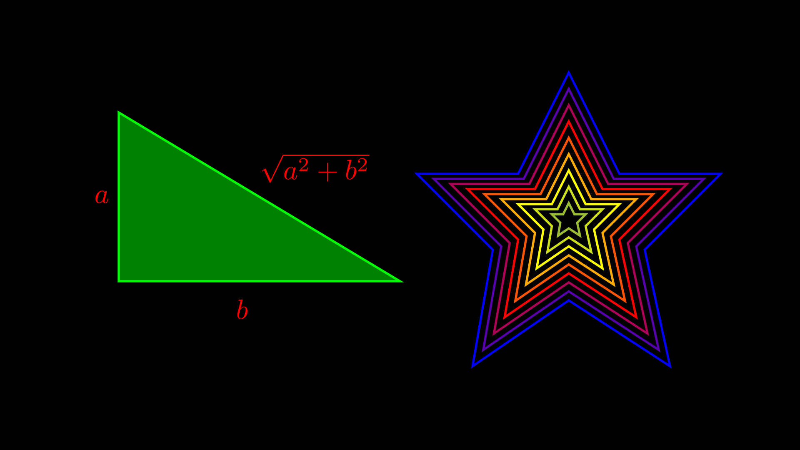

Os Mathematical objects ou, simplesmente Mobjects, e existem de vários tipos. Serão apresentados e utilizados alguns desses tipos em diferentes exemplos práticos. Cada um desses objetos desempenha um papel importante na criação de animações e gráficos dinâmicos.
Dica
O manim oferece uma vasta variedade de Mobjects, que proporcionam uma ampla gama de possibilidades para a criação de animações de alto nível. Esses objetos são componentes fundamentais para o desenvolvimento de animações, permitindo desde a construção de formas geométricas simples até estruturas matemáticas complexas, como gráficos de funções, matrizes, e curvas tridimensionais.
Embora a quantidade de objetos disponíveis no manim seja imensa, o que inviabiliza a discussão detalhada de todos eles aqui, é altamente recomendável a consulta à documentação oficial, onde é possível encontrar uma descrição completa de cada Mobject e exemplos de como utilizá-los de maneira eficaz. Além disso, a documentação oferece tutoriais, dicas, e sugestões de práticas recomendadas, o que facilita o aprendizado e a exploração das várias funcionalidades oferecidas pela biblioteca.
2.1 Tipo geometry
No tipo geometry encontram-se vários Mobjects geométricos úteis para criar as nossas animações. Esta é uma lista de classes comumente usadas. Os parâmetros do construtor mais úteis estão listados abaixo da descrição das classes. No entanto, essas listas não são exaustivas e, por exemplo, muitos objetos podem outros argumentos. Temos por exemplo:
radius (float|None): Define o raio do arco, i.e. a distância entre o centro do arco ao próprio arco;
quadrant (Point2D): Uma sequência de dois números inteiros determinando qual dos 4 quadrantes deve ser usado. O primeiro valor indica se deve ancorar o arco na primeira linha mais próximo do ponto final (1) ou ponto inicial (-1), e o segundo valor funciona de forma semelhante para o final (1) ou início (-1) do segundo linha. Possibilidades: (1,1), (-1,1), (1,-1), (-1,-1);
other_angle (bool): Alterna entre os dois ângulos possíveis definidos por dois pontos e um centro de arco. Se definido como False (padrão), o arco sempre seguirá no sentido anti-horário a partir do ponto na line1 até que o ponto na line2 seja alcançado. Se definido como True, o ângulo irá no sentido horário da line1 para a line2;
Dot: Permite um ponto no arco. Usado principalmente como uma convenção para indicar um ângulo reto. O ponto pode ser personalizado com dot_radius, dot_distance e dot_color;
elbow: Produz um Mobject do tipo cotovelo indicando um ângulo reto;
kwargs: Argumentos adicionais a serem passados à classe Arc.
Para detalhes consulte a documentação da classe Angle.
Exemplo 2.1 Representação de um ângulo no plano cartesiano.
Figura 2.1: Representação de um ângulo no plano cartesiano com manim.
Linha 6. A classe DashedVMobject permite definir um VMobject composto por traços em vez de linhas. Para detalhes consulte a documentação da classe DashedVMobject;
Linhas 15-16. A classe Line representa uma linha ou segmento de reta. A classe Line disponibiliza o parâmetro path_arc (float | None), definido em radianos, que permite definir uma linha curva considerando o início e o fim com um ângulo especificado. Nesse caso, o comportamento torna-se semelhante à classe ArcBetweenPoints. Não havendo definição de valores para o parâmetro, a linha será uma linha reta. Para detalhes consulte a documentação da classe Line;
Linhas 15-16. Mobjects contêm pontos que definem seus limites. Para calcular o valor desses pontos podemos utilzar os seguintes métodos: mobject.get.start(), mobject.get_end(), mobject.get_center(), mobject.get_top(), mobject.get_bottom(), mobject.get_left(), mobject.get_right(), mobject.get_corner(), get_center_of_mass(), entre outros. É importante notar que mobject.get_center() não obtém o centro geométrico ou centro de massa do Mobject. O que mobject.get_center() faz é “criar” um retângulo imaginário cujas bordas contêm todo o seu Mobject e então retorna as coordenadas desse retângulo. Se você precisar obter o centro de massa de um Mobject, use mobject.get_center_of_mass();
Linha 17. Group permite criar grupos de Mobjects. Ao adicionar o mesmo Mobject mais de uma vez, as repetições são ignoradas. Sendo Group um Mobject, ele suporta qualquer método utilizado para Mobjects. O método mobject.set_color() permite definir a cor do Mobject. ;
Linha 19. A classe Angle permite criar um arco circular ou objeto tipo “cotovelo” representando um ângulo de duas linhas. Discutiremos essa clase na Seção 2.1.1;
Linhas 22-26. Text e Tex são duas formas de criar textos.
2.1.3 Classe Circle
class Circle(radius=None, color=ManimColor('#FC6255'), **kwargs)
Parâmetros
`radius`` (float | None): Raio do círculo;
color: Definição do color do objeto;
kwargs: Argumentos adicionais a serem passados à classe Circle.
Para detalhes consulte a documentação da classe Circle.
Exemplo 2.3 Desenhando cículos com Circle.
Figura 2.3: Sequência de círculos com Circle.
Código
from manim import*class Circulos(Scene):def construct(self): num_points =30 angulos = [n * (360/ num_points) for n inrange(num_points)] circulo_externo = Circle() circulos = [Circle(radius=2) .move_to(circulo_externo.point_at_angle(n*DEGREES))for n in angulos] colors = [YELLOW, PURE_RED, PINK]self.add(Group(*circulos).set_color_by_gradient(*colors), circulo_externo)
Linha 13. O método mobject.point_at_angle() usa um único argumento que é o ângulo do ponto ao longo do círculo em radianos. A constante DEGREES representa a taxa de câmbio entre radianos e graus.
2.1.4 Classe Dot
class Dot(point=array([0., 0., 0.]), radius=0.08, stroke_width=0, fill_opacity=1.0, color=ManimColor('#FFFFFF'), **kwargs)
Parâmetros
width (float): A largura horizontal da elipse;
height (float): A altura vertical da elipse;
kwargs: Argumentos adicionais a serem passados à classe Circle.
Para detalhes consulte a documentação da classe Dot.
Linha 6. A função NumberPlane() permite desenhar o plano cartesiano com linhas de fundo, é ideal para fazer transformações lineares. O método mobject.fade() diminui a opacidade do objeto dando a sensação de desvanecimento;
Linha 10. As variáveis alpha_inicio e alpha_fim definem o comprimento do arco;
Linha 14. O método mobject.point_at_circle() retorna a posição de um ponto no círculo;
Linha 17. A classe ArcBetweenPoints representa um arco entre dois pontos. O centro do arco é calculado como estando no lado esquerdo da perpendicular da linha do início ao fim;
Linha 18. O método mobject.get_center() retorna o valor do ponto central do objeto;
Linha 24. A classe Line representa uma linha ou segmento de reta. A classe Line disponibiliza o parâmetro path_arc (float | None), definido em radianos, que permite definir uma linha curva considerando o início e o fim com um ângulo especificado. Nesse caso, o comportamento torna-se semelhante à classe ArcBetweenPoints. Não havendo definição de valores para o parâmetro, a linha será uma linha reta;
Linha 27. A classe Sector representa um setor de um círculo. Será discutida com detalhe na Seção 2.1.13;
2.1.5 Classe Ellipse
class Ellipse(width=2, height=1, **kwargs)
Parâmetros
width (float): A largura horizontal da elipse;
height (float): A altura vertical da elipse;
kwargs: Argumentos adicionais a serem passados à classe Circle.
Para detalhes consulte a documentação da classe Ellipse.
Exemplo 2.5 Desenhando elipses com Ellipse.
Figura 2.5: Sequência de elipses com Ellipse.
Código
from manim import*class Elipses(Scene):def construct(self): num_points =50 angulos = [n * (360/ num_points) for n inrange(num_points)] elipses = [Ellipse(width=4, height=5) .move_to(Ellipse().point_at_angle(n*DEGREES))for n in angulos] colors = [PINK, PURE_RED, PURE_GREEN]self.add(Group(*elipses) .set_color_by_gradient(*colors) .rotate_about_origin(PI/6))
Linha 18. O método mobject.rotate_about_origin() aplica uma rotação tomando como ponto de referência a origem do objeto. O ângulo de rotação está definido em radianos. Dessa forma, a rotação aplicada é de \(\frac\pi6\), equivalente a 45 graus.
2.1.6 Classe Polygon
class Polygon(*vertices, **kwargs)
Parâmetros
vertices (Point3D): Os vértices do polígono;
kwargs: Argumentos adicionais a serem passados à classe Polygon.
Para detalhes consulte a documentação da classe Polygon.
Exemplo 2.6 Desenhando figuras geométricas com polígonos.

Figura 2.6: Triângulo retângulo e estrelas coloridas com Polygon.
Código
from manim import*class Poligono(Scene):def construct(self): t_retangulo = Polygon([-5, -1, 0], [0, -1, 0], [-5, 2, 0], color=PURE_GREEN, fill_opacity=0.5) a = Tex("$a$").move_to([-5.3,0.5,0]).set_color(PURE_RED) b = Tex("$b$").move_to([-2.8,-1.5,0]).set_color(PURE_RED) c = Tex("$\sqrt{a^2+b^2}$").move_to([-1.5,1.0,0]).set_color(PURE_RED) position_list = [ [ 3.0, 3.0, 0], # primeiro vertice [ 4.0, 1.0, 0], # segundo vertice [ 6.0, 1.0, 0], # terceiro vertice [ 4.5, -0.5, 0], # quarto vertice [ 5.0, -2.8, 0], # quinto vertice [ 3.0, -1.5, 0], # sexto vertice [ 1.1, -2.8, 0], # setimo vertice [ 1.5, -0.5, 0], # oitavo vertice [ 0.0, 1.0, 0], # nono vertice [ 2.0, 1.0, 0] # decimo vertice ] estrela = Polygon(*position_list) t = Group()for i in [x /10.0for x inrange(10)]: t = t.add(estrela.copy().scale(i))self.add(t_retangulo, a,b,c, t.set_color_by_gradient(GREEN_E, YELLOW, PURE_RED, PURE_BLUE))
2.1.7 Classe Polygram
class Polygram(*vertex_groups, color=ManimColor('#58C4DD'), **kwargs)
Parâmetros
vertex_groups (Point3D): Os grupos de vértices que compõem o Polygram. O primeiro vértice de cada grupo é repetido para fechar a forma. Cada ponto deve ser um arranjo tridimensional [x,y,z];
color (ParsableManimColor): A cor do Polygram;
kwargs: Argumentos adicionais a serem passados à classe Polygram.
Para detalhes consulte a documentação da classe Polygram.
Exemplo 2.7 Desenhando muitas estrelas coloridas com Polygram.
Linha 1. Importa a biblioteca random. A biblioteca disponibiliza um método para gerar valores pseudo-aleatórios uniformes em um intervalo. Esse último é usado para gerar as coordenadas das estrelas na cena;
2.1.8 Classe RegularPolygon
class RegularPolygon(n=6, **kwargs)
Parâmetros
n (int): Número de lados do polígono regular;
kwargs: Argumentos adicionais a serem passados à classe RegularPolygon.
Para detalhes consulte a documentação da classe RegularPolygon.
Exemplo 2.8 Desenhando figuras geométricas com polígonos regulares.
Figura 2.8: Triângulo retângulo e estrelas coloridas com Polygon.
Código
from manim import*class PoligonoRegular(Scene):def construct(self): txt =lambda lados, poly : Group(poly, MathTex(f"n = {lados}").next_to(poly, DOWN)) colors = [GREEN_E, YELLOW, PURE_RED, PURE_BLUE] grupo = [txt(l,RegularPolygon(n=l)) for l inrange(6,12)]self.add(Group(*grupo).arrange().set_color_by_gradient(*colors))
2.1.9 Classe RegularPolygram
class RegularPolygram(num_vertices, *, density=2, radius=1, start_angle=None, **kwargs)
Parâmetros
num_vertices (int): Número de vértices;
density (int): Densidade do RegularPolygram. Pode ser considerado quantos vértices devem ser saltados para traçar uma linha entre eles. Cada vértice de densidade está conectado;
radius (float): O raio do círculo em que os vértices são colocados;
start_angle (float | None): Ângulo em que os vértices começam; a rotação do RegularPolygram;
kwargs: Argumentos adicionais a serem passados à classe RegularPolygram.
Para detalhes consulte a documentação da classe RegularPolygram.
Exemplo 2.9 Desenhando muitas estrelas coloridas com RegularPolygram.
Figura 2.9: Vários desenhos coloridos com RegularPolygram.
Código
import randomfrom manim import*class PoligramaRegular(Scene):def construct(self): colors = [GREEN_E, YELLOW_C, PURE_RED, PURE_BLUE] grupo = [RegularPolygram(10, radius=0.5, density=i) .copy() .move_to([random.uniform(-6,6), random.uniform(-3,3),0]) for i inrange(1,50)]self.add(Group(*grupo).set_color_by_gradient(*colors))
Linha 10. Na criação dos objetos, consideramos diferentes valores para o parâmetro density. Dessa forma, temos diferentes figuras na cena.
2.1.10 Classe Retangle
class Rectangle(color=ManimColor('#FFFFFF'), height=2.0, width=4.0, grid_xstep=None, grid_ystep=None, **kwargs)
Parâmetros
color: Define a cor do retângulo. O padrão da cor é branco;
height (float): A altura vertical do retângulo. O padrão da altura são 2 unidades;
width (float): A largura horizontal do retângulo. O padrão da largura são 4 unidades;
grid_xstep (float | None): Espaço entre linhas de grade verticais;
grid_ystep (float | None): Espaço entre linhas de grade horizontais;
kwargs: Argumentos adicionais a serem passados à classe Polygon.
Para detalhes consulte a documentação da classe Rectangle.
Exemplo 2.10 Criação de três retângulos com diferentes formatações.
Figura 2.10: Diferentes retângulos criados com manim.
Linhas 7-8. O parâmetro fill_color permite definir a cor de preenchimento do objeto e fill_opacity define a transparência da cor de preechimento. Caso não seja definida uma cor de preechimento, o padrão é a mesma cor do objeto. O parâmetro fill_opacity é definido com um valor entre 0 e 1. Quanto mais próximo de 1, mais sólida a cor;
Linhas 23-24. O método mobject.set_stroke() permite alterar as propriedades de espessura das linhas que definem o objeto. No exemplo, o método é utilizado para modificar a espessura das linhas do retângulo e da grade interior;
Linha 26. Atribuimos à variável retangulos um grupo de objetos e aplicamos o método mobject.arrange() para posicioná-los na cena.
Se tiver interesse em retângulos com cantos arredondados, manim disponibiliza a classe RoundedRectangle:
class RoundedRectangle(corner_radius=0.5, **kwargs)
Parâmetros
corner_radius (float | list[float]) : Define a curvatura dos cantos do retângulo;
kwargs: Argumentos adicionais a serem passados à classe Rectangle.
Para detalhes consulte a documentação da classe RoundedRectangle.
Exemplo 2.11 Criação de três retângulos com diferentes formatações.
Figura 2.11: Uma aplicação de retângulos arredondados criados com manim.
Código
from manim import*class retangulo_arredondado(Scene):def construct(self): txt = Text("Introdução ao manim", gradient=[PURE_RED, YELLOW], font ="Bebas Neue", font_size =70 ) retangulo = RoundedRectangle(corner_radius =0.5, height=2.0, width=12.0, color = PINK, fill_opacity =0.5, sheen_factor =-0.7, )self.add(retangulo, txt)
Linhas 8-9. Permitem definir a fonte e o tamanho da mesma;
Linha 17. O sheen_factor permite definir o nivel de brilho do objeto.
2.1.11 Classe Square
class Square(side_length=2.0, **kwargs)
Parâmetros
side_length: Define o comprimento dos lados do quadrado;
kwargs: Argumentos adicionais a serem passados à classe Rectangle.
Para detalhes consulte a documentação da classe Square.
Exemplo 2.12 Sequência de muitos quadrados coloridos.
Figura 2.12: Diferentes quadrados criados com manim.
Linha 11. Criamos um grupo de objetos. Assim podemos manipular vários objetos ao mesmo tempo. Discutiremos esse tipo de Mobject com mais detalhe nas próximas seções;
Linha 18. O método mobject.align_on_border() permite alinhar um objeto com a borda da câmera. O método recebe dois parâmetros: direction e buff. O primeiro indica a direção, que O segundo, também chamado de buffer, indica um espaçamento entre a borda e o objeto, por padrão o valor deste buffer é 0.5 unidades;
Linha 22. O método mobject.move_to() permite posicionar um objeto na tela. Este método requer um arranjo tridimensional, cujos elementos definem as coordenadas \((x,y,z)\) de um objeto na tela, usando sempre o centro da câmera como referência. Lembre-se que se as coordenadas estão fora dos limites da câmera então não ficará visível em sua animação. No exemplo, DOWN representa np.array([-1, 0, 0]).
2.1.12 Classe Triangle
class Triangle(**kwargs)
Parâmetros
kwargs: Argumentos adicionais a serem passados à classe RegularPolygon.
Para detalhes consulte a documentação da classe Triangle.
Exemplo 2.13 Criação de uma sequência de triângulos com diferentes cores e tamanhos.
Figura 2.13: Sequência de triângulos criados com Triangle.
Código
from manim import*class Triangulos(Scene):def construct(self): triangulo = Triangle(fill_opacity=0.3) t = Group()for i in [x /10.0for x inrange(0,18,2)]: t = t.add(triangulo.copy().scale(i))self.add(t .set_color_by_gradient(GREEN_E, YELLOW, PURE_RED, PURE_BLUE) .arrange(buff=0.1, aligned_edge=DOWN) )
Linha 6. Instanciamos um objeto da classe Triangle() e atribuimos à variável triangulo. Em palavras mais simples, criamos um triângulo equilátero;
Linha 8. Criamos um grupo de objetos. Assim podemos manipular vários objetos ao mesmo tempo. Discutiremos esse tipo de Mobject com mais detalhe nas próximas seções.
2.1.13 Classe Sector
class Sector(outer_radius=1, inner_radius=0, **kwargs)
Parâmetros
outer_radius (float): O raio do círculo em que os vértices externos são colocados;
inner_radius (float | None): O raio do círculo em que os vértices internos são colocados. Quando não for especificado, o raio interno será calculado de forma que as bordas da estrela sigam perfeitamente as bordas de sua contraparte;
kwargs: Argumentos adicionais a serem passados à classe RegularPolygram.
O Exemplo 2.4 permite visualizar uma aplicação da classe Sector. Para detalhes consulte a documentação da classe Sector.
2.1.14 Classe Star
class Star(n=5, *, outer_radius=1, inner_radius=None, density=2, start_angle=1.5707963267948966, **kwargs)
Parâmetros
n (int): Número de pontas da estrela;
outer_radius (float): O raio do círculo em que os vértices externos são colocados;
inner_radius (float | None): O raio do círculo em que os vértices internos são colocados. Quando não for especificado, o raio interno será calculado de forma que as bordas da estrela sigam perfeitamente as bordas de sua contraparte;
density (int): Densidade da Star. Usado quando inner_radius não for especificado;
kwargs: Argumentos adicionais a serem passados à classe RegularPolygram.
Para detalhes consulte a documentação da classe Star.
Exemplo 2.14 Desenhando um simples cartão de natal com Star.
Figura 2.14: Cartão de natal bem simples com Star.
Código
from manim import*import randomclass Estrela(Scene):def construct(self): txt = Text("Feliz Natal 2024", font='Ubuntu Sans Mono', weight=BOLD, color=PURE_RED, slant=ITALIC).rotate(PI/6) star = Star(outer_radius=0.5, color=YELLOW_D, fill_opacity=0.7) r = Rectangle(width=0.5, height=1.5, fill_color=DARK_BROWN, fill_opacity=1, stroke_width=0 ) colors = [ORANGE, YELLOW, GREEN, BLUE] grupo = [Triangle(fill_color=PURE_GREEN, fill_opacity=1, stroke_width=0) .scale(i/3) for i inrange(1,5)] grupo_star = [Star(outer_radius=0.5) .scale(random.uniform(0.1,0.5)) .shift([random.uniform(-7,7), random.uniform(-4,4), 0]) for _ inrange(100)]self.add(Group(*grupo_star) .set_color_by_gradient(*colors), txt.shift(LEFT*4), star.set_color(YELLOW_D).set_opacity(1).next_to(grupo[1],UP*5), Group(*grupo).arrange(DOWN, buff=-0.2), r.next_to(grupo[2],DOWN*7.2) )
Linha 12. Aplicamos uma rotação de \(\frac\pi6\) (equivalente a 45°) com o método mobject.rotate(). O ângulo de rotação deve ser indicado em radianos;
Linha 33. O método mobject.shift() é semelhante ao mobject.move_to, ambos os métodos são utilizados para posicionar objetos na cena. A diferença entre os métodos é que mobject.move_to() sempre se refere ao centro da câmera (a origem), enquanto mobject.shift() se refere à posição atual do seu Mobject;
Linhas 40-41. O método mobject.next_to() usa a borda de um Mobject como referência para posicionar nosso objeto. Assim como mobject.next_to(), o método mobject.arrange() é bastante útil para posicionar objetos na cena. Esse último é muito prático quando manipulamos grupos de objetos. Esses métodos serão discutidos com detalhes na próxima seção.